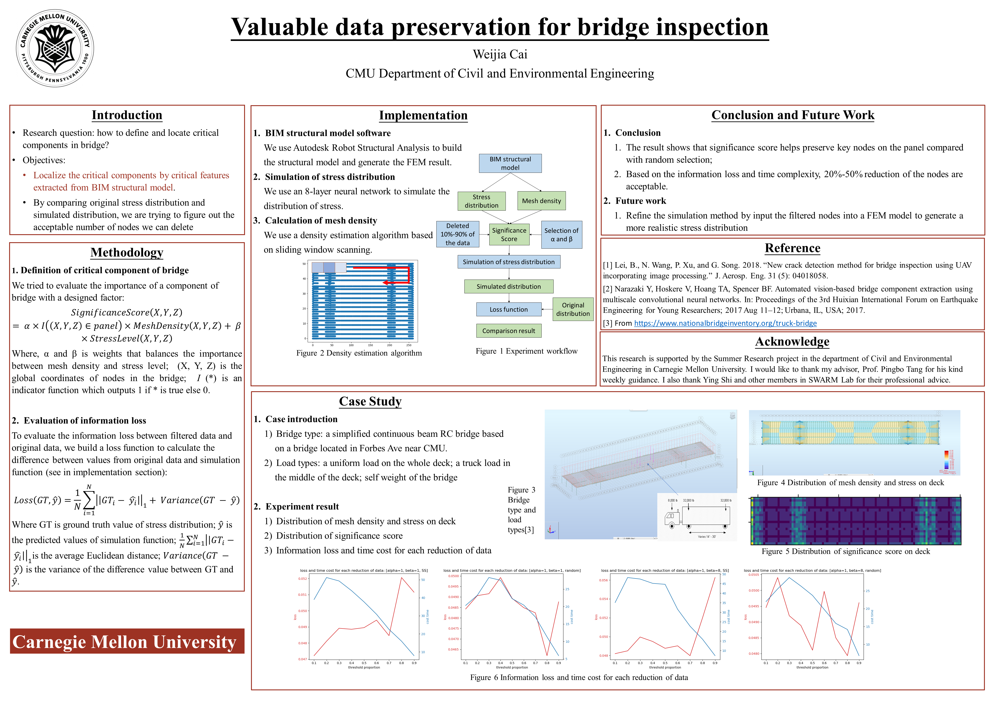

Valuable Data Preservation of Drone-generated Data for bridge inspection
This research aims to extract valuable information from video data collected by drone during bridge inspection. So we propose a framework as below, to filter relatively "useless" frames that contain less valuable information:
Motivation
Drone-based bridge inspection has shown a great benefit for the improvement of efficiency and safety for inspectors and workers. As drone can carry various kinds of sensors like camera and LiDAR, drone-based bridge inspection are providing more accurate and more quantative data for inspectors to improve their evaluation on the bridge conditions. However, not every piece of the data can provide significant information for inspectors. Actually, a significant amount of data are duplicate and therefore meaningless. This motivates us to find a way to identify which data is more important for inspectors to keep and which can be deleted.
Goal
Our ultimate goal is to define the criticality of bridge components (or mesh node in this research). But for current progress, we have several mini goals:
- 1)...
- 2)...
Current Progress...
1> Significance Score
2> FEMpy
We want to see which node is important, so a customized mesh node input is necessary for this research. However, the main FEM software currently do not provide us
this function. So, we decided to build our own FEM model in Python. Note that the current version of FEMpy only supports 2D structure like portal frame.
The main structure of the FEMpy libray is shown below:
 3> Information Loss Evaluation
3> Information Loss Evaluation
Currently, we use three different evaluation methods:
- 1) Least Square Error
- 2) Cross Entropy
- 3) Coefficient of Variation